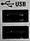

USB Connectors
 |
Double USB connectors of type A (instrument acts as master), used to connect for example a keyboard, a mouse or a USB stick.
The USB connectors comply with standard USB 2.0.

USB devices with external power supply must never feed back current into the 5 V power supply of the USB interface. Before using such a device, ensure that there is no connection between the positive pole of the power supply and the +5 V power pin of the USB interface (VBUS).
The length of passive connecting USB cables must not exceed 1 m. The maximum current per USB port is 500 mA. |